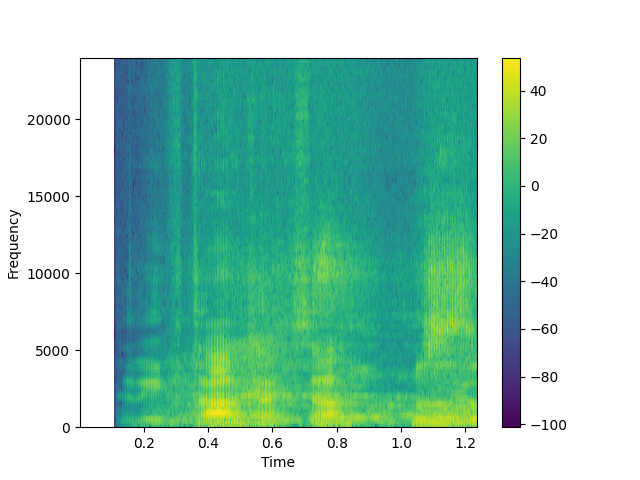

Introduction
An application which used as a correctness of sound possword detection based on the fingerprint of an audio
Method
In this app we depend on
Decission tree calssifier
which is a decision support tool that uses a tree-like model of
decisions and their possible consequences outcomes.


Success!
User is speaking
Door will open now

Fail!
Accuracy
Spectrogram

Conclusion
- fingerprint is to capture the signature of a piece of sound.
- Spectrograms are great because they allow us to identify the
frequency content over time,
and how loud or quiet each frequency is.